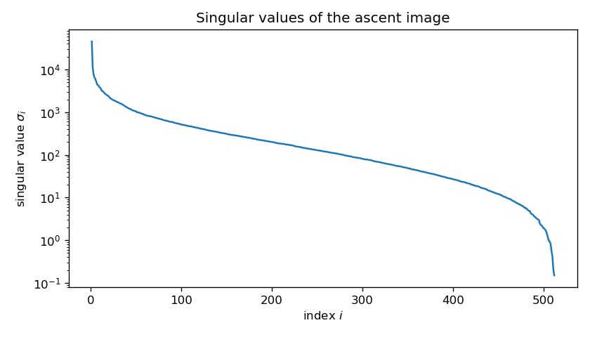
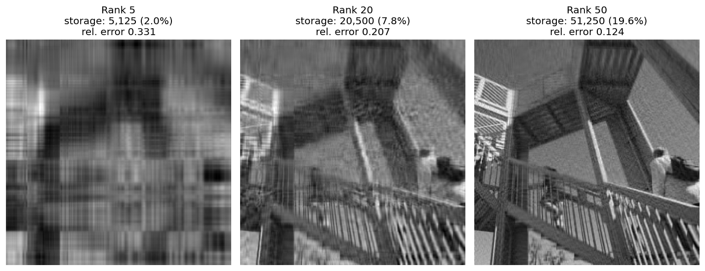

The Singular Value Decomposition
The Singular Value Decomposition (SVD) is a version of the spectral theorem that applies to non-square matrices. Let X be a real n\times m matrix and let D=X^{\top}X. D is a positive semidefinite symmetric m\times m matrix and so we can apply the spectral theorem to find an orthogonal matrix P such that P^{\top}DP=\Lambda where \Lambda is diagonal. Put another way: DP = P\Lambda
which expresses the fact that the columns of P are orthonormal eigenvectors for D.
Let’s set A=XP. Then A^{\top}A=P^{\top}X^{\top}XP=\Lambda. This means that the columns of A are orthogonal but not necessarily orthonormal.
From a geometric point of view, the entries of each row of A are the coordinates of the corresponding row of X in the orthonormal basis given by the columns of P.
If D is positive definite, so all the \lambda_{i}>0, then we can normalize the columns of A by setting A_{1}=A\Lambda^{-1/2}. This happens if and only if X has rank m\le n. In this case A_{1}^{\top}A_{1}=\Lambda^{-1/2}\Lambda\Lambda^{-1/2}=I. So A_{1} has orthonormal columns.
If D has zero eigenvalues, then the matrix A will have zero columns corresponding to the zero eigenvalues. So let’s order the eigenvalues in descending order of size and suppose \lambda_{r+1},\ldots, \lambda_{m} are all zero. In this case, the rank of X is r. Drop columns r+1,\ldots, m from A, yielding A_{r}, and “shrink” \Lambda so that it is r\times r with the nonzero eigenvalues on the diagonal, yielding \Lambda_{r}. Let A_{1}=A_{r}\Lambda_{r}^{-1/2} as before. This A_{1} is n\times r and has orthonormal columns.
Complete the columns of A_{1} to obtain an orthogonal n\times n matrix U by adding orthonormal columns u_{r+1},\ldots, u_{n}. Let \sigma_{i}=\sqrt{\lambda_{i}} for i=1,\ldots,m and let \Sigma be the n\times m “diagonal” matrix constructed from these “singular values.”
The key point now is that, in the product U\Sigma, the first r columns are multiplied by the nonzero \sqrt{\lambda_{i}}, so the first r columns of U\Sigma give the matrix A_{1}\Lambda_{r}^{1/2}, which agrees with the first r columns of A=XP. The remaining columns of U\Sigma are zero, which agrees with the remaining columns of A=XP.
Therefore: XP = U\Sigma
or X=U\Sigma V^{\top} where U is orthogonal, \Sigma is n\times m “diagonal”, and V=P is m\times m orthogonal. This is called the singular value decomposition of X. The diagonal entries of \Sigma are called the singular values and are uniquely determined.
The “reduced” form of this decomposition keeps only the first r columns of U, leaving an n\times r matrix U_{r}; the first r diagonal entries of \Sigma, leaving an r\times r diagonal matrix \Sigma_{r}; and the first r columns of P, yielding an m\times r matrix V_{r}. Then X = U_{r}\Sigma_{r}V_{r}^{\top}.
Low Rank Approximations
One way to interpret the singular value decomposition is that it allows one to write a linear transformation L:\mathbf{R}^m\to\mathbf{R}^n as a sum of rank one maps. This follows from the fact that, if we let X be the matrix of L, then the reduced SVD tells us that X = \sum_{i=1}^{r} \sigma_{i}u_{i}v_{i}^{\top}.
Here the u_{i} and v_{i} are the columns of U and V respectively and the \sigma_{i} are the singular values. Each u_{i}v_{i}^{\top} is an (n\times 1) \times (1\times m) matrix product, yielding an n\times m matrix. It is rank one since its range is spanned by u_{i}.
Now consider the matrices obtained by truncating this sum: X_{k} = \sum_{i=1}^{k} \sigma_{i}u_{i}v_{i}^{\top}
Here (assuming the \sigma_{i}>0 for i\le k), X_{k} has rank k. We will show that X_{k} is the best approximation to the original matrix X among all matrices of rank at most k (and, after choosing orthonormal bases, the same holds for linear maps between inner product spaces). We will look at a variety of characterizations of “best,” but for many applications the most useful one is that X_{k} minimizes the squared error between the original X=(x_{ij}) and matrices B=(b_{ij}) of rank at most k: E(B,X) =\sum_{i,j} (x_{ij}-b_{ij})^2.
Application: Image Compression
One application of the technique of “low-rank approximation” is to the problem of image compression. A gray-scale image is basically an array of integers where each cell of the array corresponds to a pixel in the image, and the value represents how that pixel should be drawn (0 for black, 255 for white). A color image is generally represented by three arrays, with the color of each pixel represented by a 3-tuple giving the red, green, and blue intensity of that pixel.
We consider the gray-scale case for simplicity. Suppose A is a matrix representing an n\times n image, consisting of n^{2} integers between 0 and 255. As k increases, the rank k approximations A_{k} get close to A and so represent “nearly” the same image. However, notice that storing A requires n^{2} numbers while storing A_{k} requires 2kn+k=k(2n+1).
For example, the following image, taken from the scipy.datasets package, is a 512\times 512 gray-scale image represented by a 512\times 512 matrix A of integers between 0 and 255.
ascent image from scipy.datasets.We can compute the SVD of A=U\Sigma V^{\top} where U and V are 512\times 512 orthogonal matrices and \Sigma is the diagonal matrix of singular values of A. The largest of these is around 45500 while the smallest is .15. To see them more clearly, we plot them here on a logarithmic scale.

ascent image (log scale).As you can see, there are a relatively small number of “big ones” larger than 10^3; then many between 10^3 and 1; and then a few more on the tail that are less than 1.
This figure shows the effect of low rank approximation on the image.

ascent image.Norms on Vectors, Matrices and Linear Maps
Our discussion in this section follows, in part, Conrad’s expository note Computing the Norm of a Matrix
Vector Space Norms
Let V be a vector space over F, where F is either \mathbf{R} or \mathbf{C}. A norm on V is a function \|\cdot\|:V\to \mathbf{R} such that:
- \|v\|\ge 0 for all v\in V, with equality if and only if v=0.
- \|v+w\|\le \|v\|+\|w\| for all v,w\in V.
- \|cv\|=|c|\|v\| for c\in F and v\in V.
A function satisfying all these conditions except the requirement that \|v\|=0 only if v=0 is called a seminorm.
These properties guarantee that the function d(v,w)=\|v-w\| satisfies the definition of a metric on V.
There are two key examples of such norms.
The “sup” norm relative to a basis. Choose a basis e_{1},\ldots, e_{n} for V. Then define \|\sum_{i=1}^{n} a_{i}e_{i}\|_{\mathrm{sup}} = \sup\{|a_1|,\ldots, |a_{n}|\}.
The “Euclidean” norm or \ell^{2} norm defined by an inner product \langle \cdot,\cdot\rangle:
\|v\| = \sqrt{\langle v,v\rangle}.
The fact that this satisfies the triangle inequality is a consequence of the Cauchy–Schwarz inequality (proved here for real vector spaces):
|\langle v,w\rangle|\le \sqrt{\langle v,v\rangle \langle w,w\rangle}.
Explicitly, \begin{aligned} \|v+w\|^2&=\langle v+w, v+w\rangle \\ &= \langle v,v\rangle +2\mathrm{Re}\langle v,w\rangle +\langle w,w\rangle \\ &\le \|v\|^2+2|\langle v,w\rangle| +\|w\|^2 \\ &\le \|v\|^2 + 2\|v\|\|w\| + \|w\|^2\ \quad\text{(by Cauchy--Schwarz)}\\ &= (\|v\|+\|w\|)^2 \end{aligned} and taking the square root of both sides gives the triangle inequality.
If the inner product is the usual dot product, then the \ell^{2} norm gives the Euclidean distance.
Definition: Two norms \|\cdot\|_1 and \|\cdot\|_{2} on a vector space are equivalent if they are each bounded by a constant multiple of the other. In other words, the two norms are equivalent if there are constants A>0 and B>0 such that A\|v\|_{1}\le \|v\|_{2}\le B\|v\|_{1} for all v\in V.
In fact, on a finite dimensional vector space V over \mathbf{R} or \mathbf{C}, all norms on V are equivalent.
Proposition: All norms on V=\mathbf{R}^{n} or \mathbf{C}^{n} are equivalent.
To prove this, we will show that any norm is in fact equivalent to the sup norm for the standard basis. Let \rho:V\to\mathbf{R} be any norm. Let e_{1},\ldots, e_{n} be the standard basis of V. Then if v=\sum_{i=1}^{n} a_{i}e_{i}, we have
\begin{aligned} \rho(v) &= \rho(\sum_{i=1}^{n} a_{i}e_{i}) \\ &\le \sum_{i=1}^{n} |a_{i}|\rho(e_{i}) \\ &\le (\sum_{i=1}^{n}\rho(e_{i}))\|v\|_{\mathrm{sup}} \end{aligned}
Therefore \rho(v)\le B\|v\|_{\mathrm{sup}} with B=\sum_{i=1}^{n}\rho(e_{i}).
Lemma: The norm \rho is a continuous function in the metric topology given by \|\cdot\|_{\mathrm{sup}}.
Proof: Given \epsilon>0, we need to find \delta so that \|x-y\|_{\mathrm{sup}}<\delta implies |\rho(x)-\rho(y)|<\epsilon. By the triangle inequality, |\rho(x)-\rho(y)|\le\rho(x-y)\le B\|x-y\|_{\mathrm{sup}}, so we can take \delta=\epsilon/B (any \delta works if B=0).
Remark: The proof so far works when \rho is only a seminorm, not just a norm, but the next part needs \rho(v)=0 only when v=0.
Lemma: The unit sphere \{v : \|v\|_{\mathrm{sup}}= 1\} in V is compact.
Proof: The unit ball \{v:\|v\|_{\mathrm{sup}}\le 1\} is compact, since it is either a finite product of copies of the interval [-1,1] in the real case, or a finite product of copies of the closed disk \{|z|\le 1\} in the complex case. The open ball \{v: \|v\|_{\mathrm{sup}}<1\} is a finite product of open intervals, or open disks, so it’s open. The sphere is the complement of the open ball in the closed ball, so it’s closed; as a closed subset of a compact set, it is compact.
Now consider the norm as a function on the unit sphere. As a continuous function on a compact set, it attains its minimum A. And since \rho is nonzero on the unit sphere, A>0. It follows that, for v\neq 0, \rho(\frac{v}{\|v\|_{\mathrm{sup}}})\ge A and therefore \rho(v)\ge A\|v\|_{\mathrm{sup}}.
Putting it all together we get A\|v\|_{\mathrm{sup}}\le \rho(v)\le B\|v\|_{\mathrm{sup}}. as desired.
Remark: The key part of this result is the compactness of the closed intervals in \mathbf{R} or closed disks in \mathbf{C}; these follow in general from the “Heine-Borel” theorem which says that closed and bounded subsets of \mathbf{R}^{n} are compact. In Equivalence of Norms Conrad describes the proof of a more general result that all norms on a finite dimensional vector space over a complete valued field (meaning a complete field together with a choice of norm that induces the complete topology) are equivalent.
Corollary: Let V and W be finite dimensional vector spaces (over \mathbf{R} or \mathbf{C}). Then all linear maps from V to W are continuous in any norm topology. A set which is bounded in one norm is bounded in any norm; similarly for open, closed, or compact.
The infinite dimensional case is different
It is very definitely false that all norms on an infinite dimensional real or complex vector space are equivalent.
For example, consider the space C([0,1]) of continuous functions on the interval [0,1]. Define two norms on this space. The first is the “sup norm”: \|f\| = \sup_{0\le x\le 1} |f(x)| and the second is the L^{1} norm: \|f\| = \int_{0}^{1} |f(x)|dx.
Notice that we can find a continuous function whose sup-norm is arbitrarily large, while its L^{1} norm remains one, by looking at a function with a big “spike” but total area 1 as shown here.

Matrix Norms
Now we turn to norms on matrices and linear maps. The first thing to observe is that the space M_{n\times m}(F) of n\times m matrices over F=\mathbf{R} or F=\mathbf{C} is a copy of F^{nm}. Thus we have the supnorm \|\cdot\|_{\mathrm{sup}} and the \ell^{2} or Euclidean norm \|\cdot\| on matrices, and all norms on the space of matrices are equivalent.
Let’s focus on the case of linear maps L:F^{n}\to F^{n} where F=\mathbf{R} or F=\mathbf{C}. Equivalently, we work with square matrices A\in M_{n}(F). Write \rho_{A}(v)=\|Av\|. In general, the function \rho_{A}(v)=\|Av\| (here \|\cdot\| is the \ell^{2} norm in the standard basis of F^{n}) is a seminorm on F^{n}. Indeed:
- \rho_{A}(v)=\|A(v)\|\ge 0.
- \rho_{A}(v+w)=\|A(v+w)\| = \|A(v)+A(w)\|\le \|A(v)\|+\|A(w)\| = \rho_{A}(v)+\rho_{A}(w)
- \rho_{A}(av) = \|A(av)\| = \|aA(v)\|=|a|\|A(v)\|= |a|\rho_{A}(v).
As we pointed out above, this means that \rho_{A} is a continuous function and there is a constant C\ge 0 such that \rho_{A}(v)\le C\|v\| for all v.
Proposition: There is a unique real number b\ge 0 such that \rho_{A}(v)\le b\|v\| for all v, and, b is minimal with this property.
Proof: Our estimate above shows that \rho_{A} is bounded on the sphere \{v: \|v\|=1\}, which, as we saw above, is compact. Therefore \rho_{A} attains its maximum and we set b to be this maximum.
Definition: The operator norm \|A\| of A is the number b defined as the maximum \|A\| = \sup_{v: \|v\|=1} \|A(v)\|
Proposition: The operator norm is in fact a norm on M_{n}(F) when F=\mathbf{R} or F=\mathbf{C}. Further, if B\in M_{n}(F), then:
- \|AB\|\le \|A\|\|B\|
- \|A^{*}\|=\|A\|
- \|A^{*}A\|=\|AA^{*}\| = \|A\|^2 and therefore \|A\|=\sqrt{\|A^{*}A\|}=\sqrt{\|AA^{*}\|}
- |\langle Av, w\rangle|\le \|A\|\|v\|\|w\|
- The operator norm is equivalent to the sup norm on M_{n}(F) with \|A\|_{\mathrm{sup}}\le \|A\|\le n\sqrt{n}\|A\|_{\mathrm{sup}}.
In particular the operator norm gives M_{n}(F) the topology of F^{n^{2}}, so M_{n}(F) is complete relative to the operator norm (Cauchy sequences relative to the operator norm converge).
Proof: This is Theorem 3.4 of Computing the Norm of a Matrix To check a few, first notice that: \|ABv\|\le \|A\|\|Bv\|\le \|A\|\|B\|\|v\| Since \|AB\| is the smallest C such that \|(AB)v\|\le C\|v\| we have \|AB\|\le \|A\|\|B\|.
The relationship with the adjoint A^{*} (the conjugate transpose, which is just A^{\top} when F=\mathbf{R}) is more interesting. We have \|Av\|^2 = \langle Av, Av\rangle = \langle v, A^{*}Av\rangle \le \|v\|\|A^{*}Av\| by the Cauchy–Schwarz inequality. This tells us that \|A\|^2\le \|A^{*}A\|\le \|A^{*}\|\|A\| The result we seek is obvious if A=0. If A is not zero, divide both sides by \|A\| to get \|A\|\le \|A^{*}\|.
Applying this to A^{*} in place of A (and using (A^{*})^{*}=A) gives \|A^{*}\|\le \|A\|
so they are equal. But then \|A\|^2\le \|A^{*}A\|\le \|A^{*}\|\|A\|\le \|A\|^2
so \|A\|^{2}=\|A^{*}A\| and similarly \|A\|^{2}=\|AA^{*}\|.
Also, |\langle Av, w\rangle|\le \|Av\|\|w\|\le \|A\|\|v\|\|w\| from the Cauchy–Schwarz inequality.